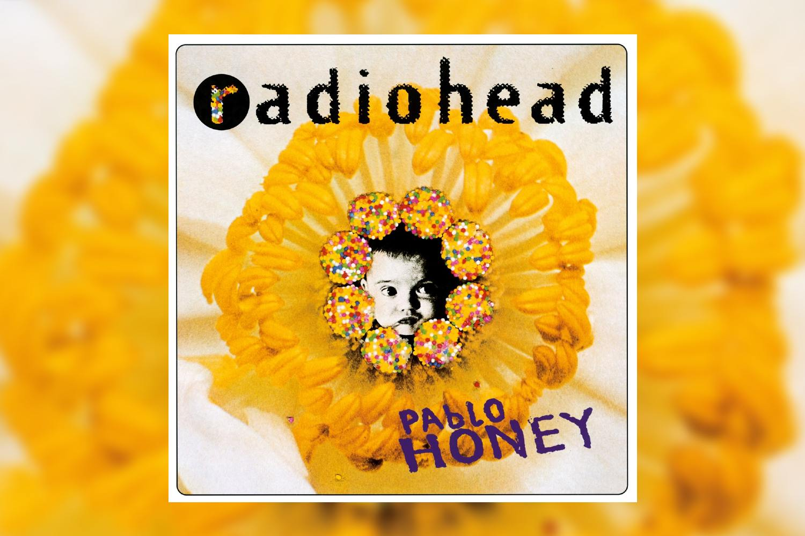

Sou uma pessoa bem reservada e gosto de filme, series, sair e de ficar em casa tambem curto dias chuvosos, gosto muito de musicas de qualquer estilo.
Vou listar algumas musicas que escuto no meu dia a dia!!
| AUTOR | CAPA | DESCRIÇÃO |
|---|---|---|
| Radiohead |  | A música “Creep”, do Radiohead, expressa sentimentos de inadequação, rejeição e baixa autoestima. O narrador se vê como alguém que não pertence ao mundo ao seu redor e se sente indigno do amor que deseja. |